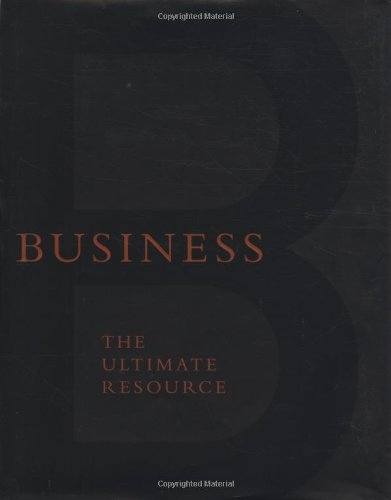

 This is a fantastic book. I bought it when it was first published (in 2002), and my copy is well used. The idea seems to be basically to publish everything you need to know about business, that a book can teach you, between two covers. The reality of course is that there are a lot of books on business, and many of them are inspiring and educational. Moreover, books like this one are great for people who want to understand key processes in big business, and even helpful for those who want to build better small business, but, despite what Chekhov said about it, business is not about processes, buzz words, or other people's money, it's about value exchange.
Shortly after I bought this book, I launched a small business and learned what I think is so far the most important lesson about business I will ever learn. If you want your business to succeed (let's define success for now as simply profitability), you're going to need two things: 1) profitable sales and 2) satisfied customers. The more transactions that create win/wins, the more customers will be satisfied and the better will be the reputation of the business. So focus first on sales or customer satisfaction.
Having said that, there's a reason business schools sell MBAs. The more knowledge about business history, business terminology, and business practice a business owner or manager possesses, the more likely the business they're involved with will be scalable, and the more efficiently, and possibly participatively, it's likely to be managed.
On that note, I recommend this book as second hand buy. If you see it at your local book fair for $30 CAD or under, and it's your kind of thing, buy it.
Between The Covers
Business the ultimate resource is a compilation of 2 page summaries on business practices and legacies. It was published by Perseus Books, a division of the Hachette Book Group a "leading US trade publisher and a division of the third largest trade and educational book publisher in the world, Hachette Livre." At more than 2000 pages, it's a beast, and it really does cover almost every basic business concept any stacked team of editors could come up with. Moreover, there's a quote at the bottom of almost every page, and a terrific business case/history study section.
Check it out at your local library, or, if you're in my neighbourhood, ask me about reading my copy. You never know...
comments powered by Disqus